En el presente trabajo se desarrollan tres ejemplos aplicando los principios básicos de la estadística descriptiva: El primero utilizando datos de entrada cuantitativos discretos el segundo usando como entrada, datos cuantitativos continuos y el tercero utilizando como datos de entrada datos cualitativos. En cada caso se trabajó con una muestra de 100 datos, construyendo su respectiva tabla de frecuencia que incluye frecuencia absoluta, frecuencia relativa y frecuencia acumulada. Asimismo, se elaboraron diferentes representaciones gráficas como histogramas, diagramas de barras, polígonos de frecuencia, ojivas y diagramas de pastel.
La variable estudiada es el número de hermanos, que corresponde a una variable cuantitativa discreta, ya que se expresa con números enteros y se puede contar. Se preguntó a 100 alumnos cuántos hermanos tienen. Los datos obtenidos se ordenaron de menor a mayor (0, 1, 2, 3, etc.). Posteriormente, se contó cuántas veces apareció cada valor para obtener la frecuencia absoluta. Luego, se calculó la frecuencia acumulada sumando progresivamente las frecuencias, y la frecuencia relativa dividiendo cada frecuencia entre el total de datos. La mayor parte de los alumnos tiene uno o dos hermanos, mientras que pocos alumnos tienen cuatro o más. Esto permite observar cómo se distribuye el tamaño de las familias entre los estudiantes.
0 0 0 0 0
0 0 0 0 0
0 0
1 1 1 1 1
1 1 1 1 1
1 1 1 1 1
1 1 1 1 1
1 1 1 1 1
1 1 1
2 2 2 2 2
2 2 2 2 2
2 2 2 2 2
2 2 2 2 2
2 2 2 2 2
2 2 2 2 2
3 3 3 3 3
3 3 3 3 3
3 3 3 3 3
3 3 3
4 4 4 4 4
4 4 4
5 5 5 5
En la variable número de hermanos, se obtuvieron 100 datos. De estos, 12 alumnos no tienen hermanos, 28 tienen uno, 30 tienen dos, 18 tienen tres, 8 tienen cuatro y 4 tienen cinco hermanos.
| No. de Hermanos | Frecuencia Absoluta (f) | Frecuencia Acumulada (Fa) | Frecuencia Relativa (Fr) |
|---|---|---|---|
| 0 | 12 | 12 | 12% |
| 1 | 28 | 40 | 28% |
| 2 | 30 | 70 | 30% |
| 3 | 18 | 88 | 18% |
| 4 | 8 | 96 | 8% |
| 5 | 4 | 100 | 4% |
Se presentan las siguientes graficas, en las cuales se toma como referencia la tabla 2, en la cual se muestra el numero de hermanos que tienen los alumnos. En este caso las cantidades de hermanos que tienen es: "0, 1, 2, 3, 4, 5"
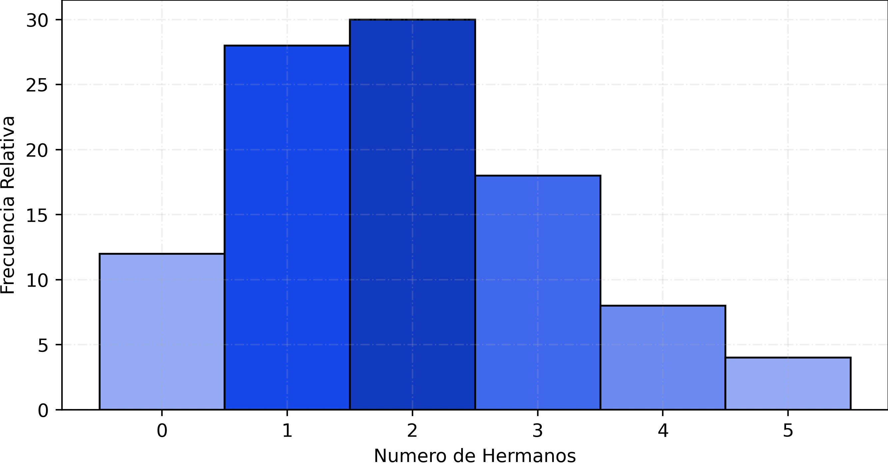
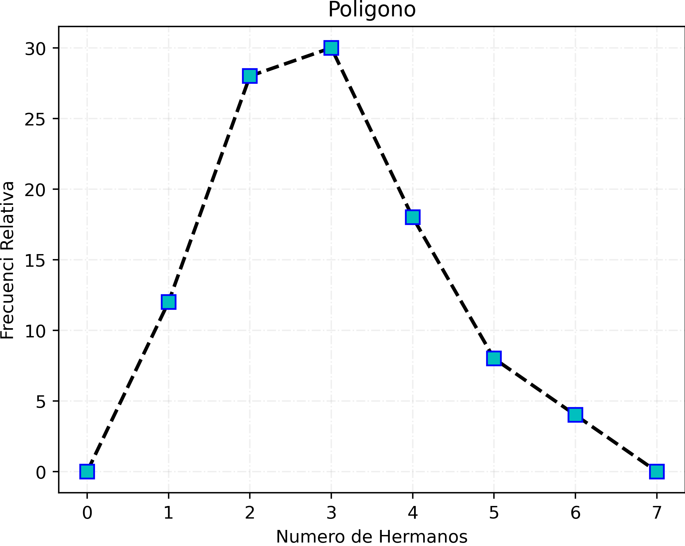
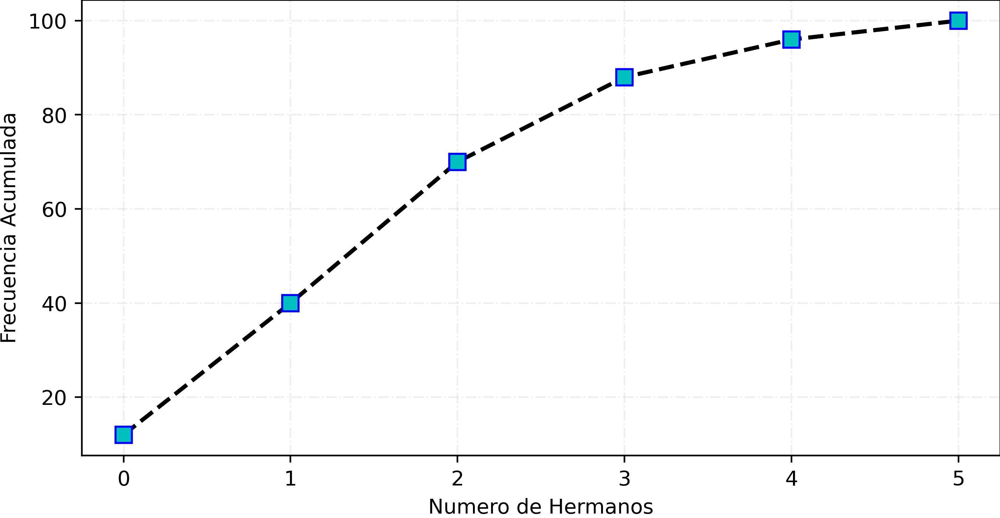
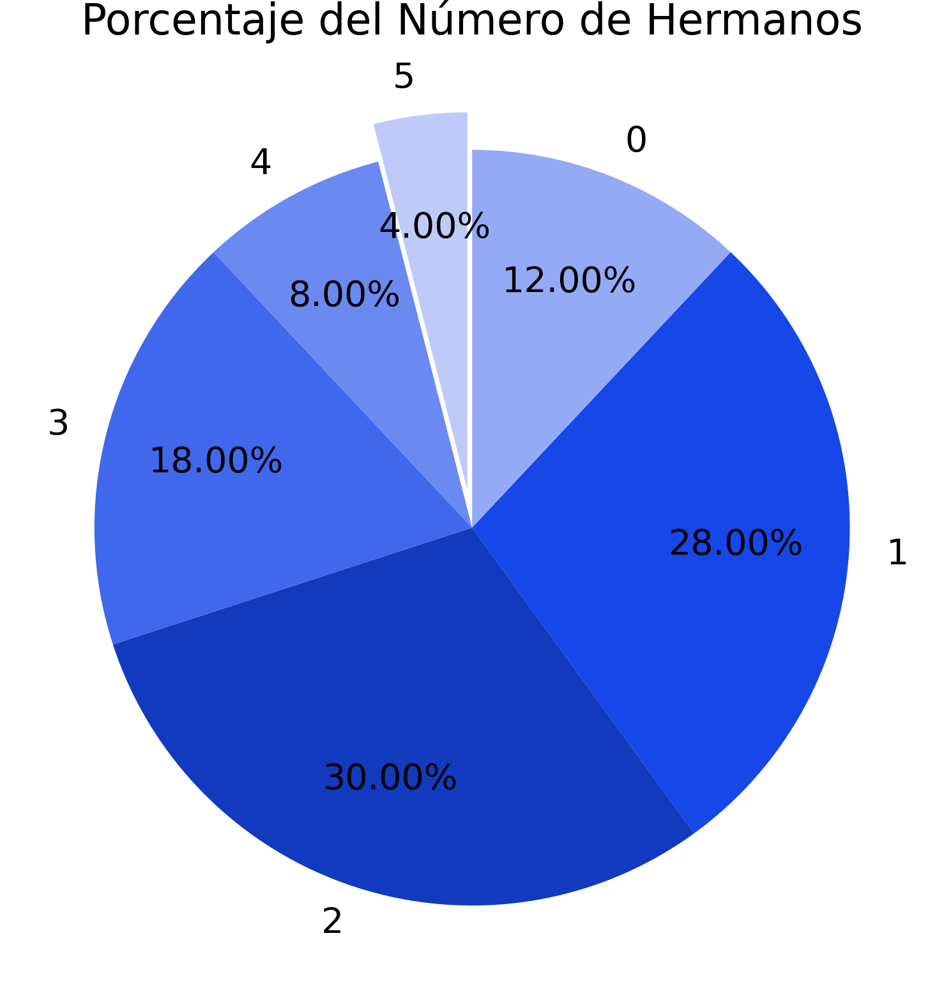
1.50 1.50 1.51 1.52 1.52 1.53 1.53 1.54 1.54 1.55 1.56 1.56 1.56 1.57 1.57 1.57 1.58 1.58 1.58 1.59 1.59 1.59 1.60 1.60 1.60 1.60 1.61 1.61 1.61 1.62 1.62 1.62 1.62 1.62 1.63 1.63 1.63 1.63 1.63 1.64 1.64 1.64 1.64 1.64 1.65 1.65 1.65 1.65 1.65 1.66 1.66 1.66 1.66 1.66 1.67 1.67 1.67 1.67 1.67 1.68 1.68 1.68 1.68 1.69 1.69 1.69 1.69 1.70 1.70 1.70 1.70 1.70 1.71 1.71 1.71 1.71 1.72 1.72 1.72 1.72 1.73 1.73 1.73 1.73 1.74 1.74 1.75 1.75 1.76 1.76 1.76 1.77 1.77 1.78 1.78 1.79 1.79 1.76 1.58 1.63
En la variable estatura, se recopilaron 100 mediciones agrupadas en intervalos. Se encontraron 10 alumnos en el intervalo de 1.50 a 1.55 m, 22 en el intervalo de 1.56 a 1.61 m, 30 en el de 1.62 a 1.67 m, 25 en el de 1.68 a 1.73 m y 13 en el intervalo de 1.74 a 1.79 m.
| Intervalo (cm) | Límite Inferior | Límite Superior | Marca de Clase (Mc) | Frecuencia Absoluta (F) | Frecuencia Acumulada (Fa) | Frecuencia Relativa (Fr) |
|---|---|---|---|---|---|---|
| 150 - 155 | 150 | 155 | 152.5 | 10 | 10 | 10% |
| 156 - 161 | 156 | 161 | 158.5 | 22 | 32 | 22% |
| 162 - 167 | 162 | 167 | 164.5 | 30 | 62 | 30% |
| 168 - 173 | 168 | 173 | 170.5 | 25 | 87 | 25% |
| 174 - 179 | 174 | 179 | 177 | 13 | 100 | 13% |
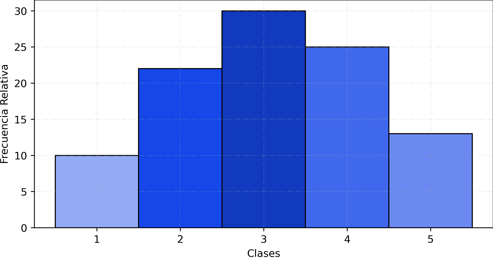
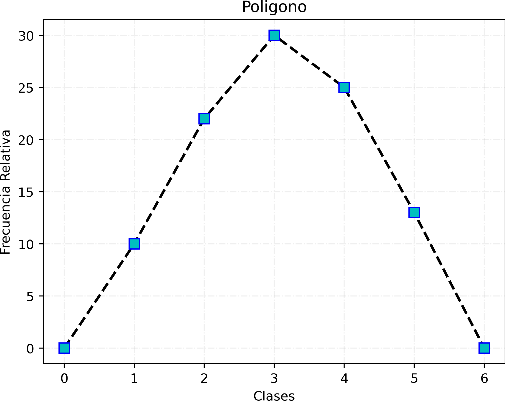
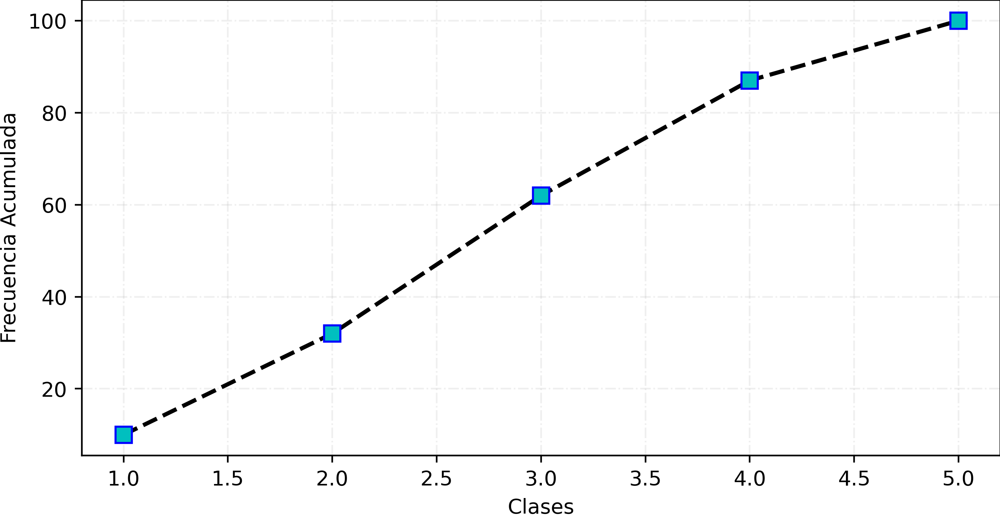
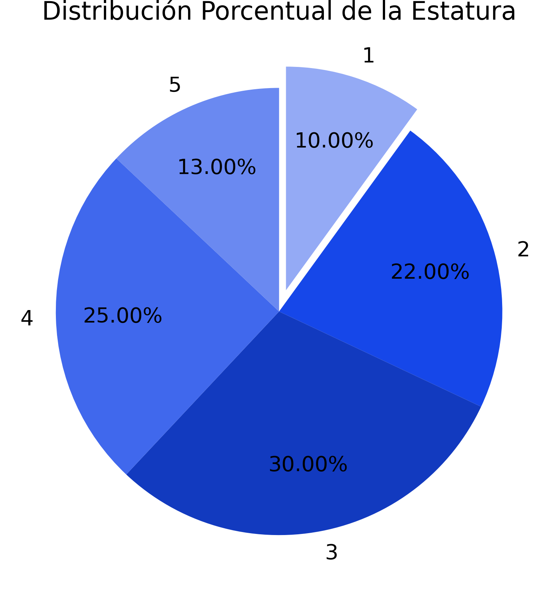
Negra Negra Negra Negra Negra Negra Negra Negra Negra Negra Negra Negra Negra Negra Negra Negra Negra Negra Negra Negra Negra Negra Negra Negra Negra Negra Negra Negra Negra Negra Negra Negra Negra Negra Negra Negra Negra Negra Negra Negra Azul Azul Azul Azul Azul Azul Azul Azul Azul Azul Azul Azul Azul Azul Azul Azul Azul Azul Azul Azul Azul Azul Azul Azul Azul Roja Roja Roja Roja Roja Roja Roja Roja Roja Roja Roja Roja Roja Roja Roja Gris Gris Gris Gris Gris Gris Gris Gris Gris Gris Otros Otros Otros Otros Otros Otros Otros Otros Otros Otros
En la variable color de mochila, se registraron un total de 100 datos, de los cuales 40 alumnos utilizan mochila negra, 25 azul, 15 roja, 10 gris y 10 otros colores. Esto permite observar que el color más frecuente es el negro.
| Color | Frecuencia Absoluta (f) | Frecuencia Acumulada (fa) | Frecuencia Relativa (fr) |
|---|---|---|---|
| Azul | 25 | 25 | 25% |
| Gris | 10 | 35 | 10% |
| Negra | 40 | 75 | 40% |
| Roja | 10 | 85 | 10% |
| Otros | 15 | 100 | 15% |
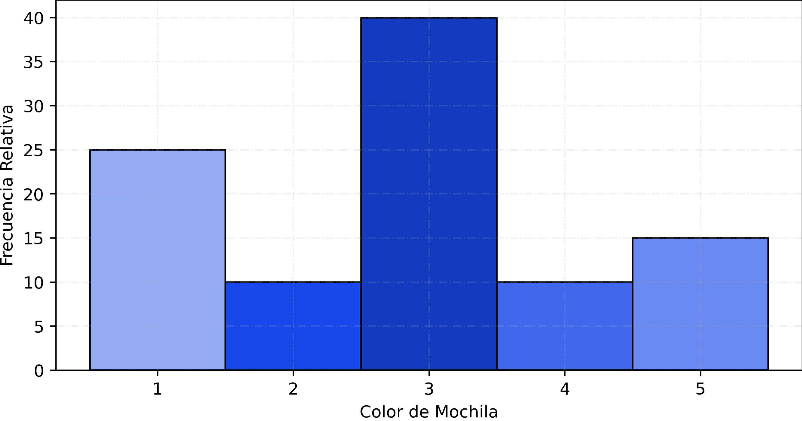
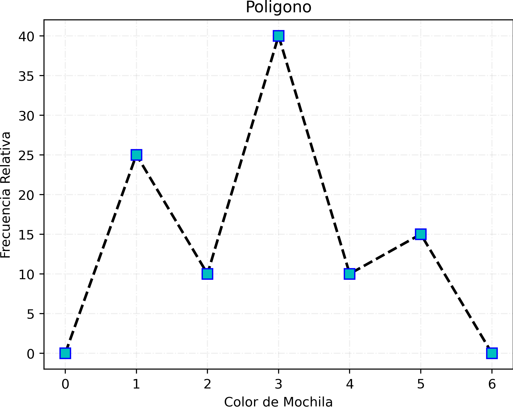
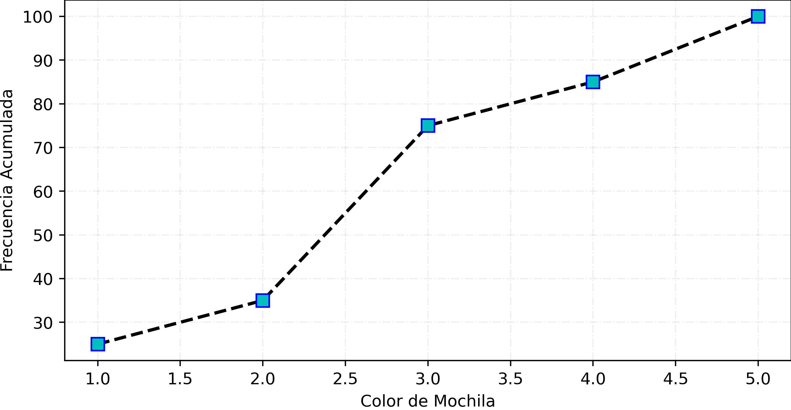
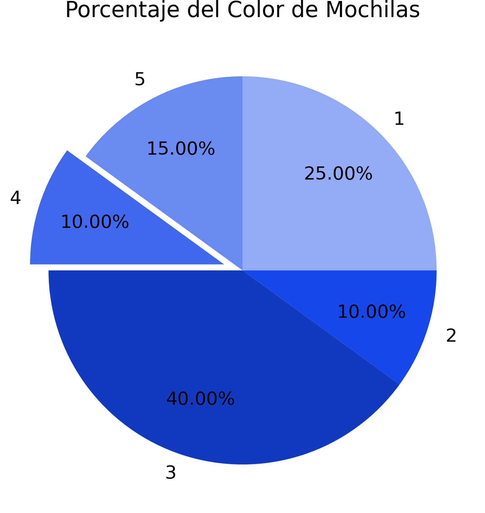
El desarrollo de este trabajo permitió aplicar de manera práctica los conceptos fundamentales de la estadística descriptiva, comprendiendo la importancia de organizar y analizar datos correctamente. A través de la construcción de tablas de frecuencia y la elaboración de diferentes representaciones gráficas, se pudo observar cómo la información puede presentarse de forma clara para facilitar su interpretación. Se identificaron las diferencias entre variables cualitativas, cuantitativas discretas y cuantitativas continuas, así como los procedimientos específicos para cada una, incluyendo el cálculo de frecuencias absolutas, relativas y acumuladas. Además, las gráficas elaboradas permitieron visualizar la distribución de los datos y detectar tendencias dentro de cada ejemplo. En conclusión, la estadística descriptiva es una herramienta esencial en el área de Probabilidad y Estadística, ya que permite transformar datos en información útil para la toma de decisiones y el análisis de situaciones reales.